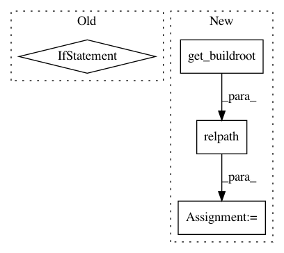

f652b7ca5dee09e6331187551019921e9c1a6f11,src/python/twitter/pants/tasks/scala_compile.py,ScalaCompile,_get_deleted_sources,#ScalaCompile#,138
Before Change
if self._deleted_sources is None:
with self.context.new_workunit("find-deleted-sources"):
analysis = ZincAnalysisCollection(stop_after=ZincAnalysisCollection.PRODUCTS)
if os.path.exists(self._analysis_file):
analysis.add_and_parse_file(self._analysis_file, self._classes_dir)
old_sources = analysis.products.keys()
self._deleted_sources = filter(lambda x: not os.path.exists(x), old_sources)
return self._deleted_sources
After Change
with self.context.new_workunit("find-deleted-sources"):
if os.path.exists(self._analysis_file):
products = Analysis.parse_products_from_path(self._analysis_file)
buildroot = get_buildroot()
old_sources = [os.path.relpath(src, buildroot) for src in products.keys()]
self._deleted_sources = filter(lambda x: not os.path.exists(x), old_sources)
else:
self._deleted_sources = []
return self._deleted_sources
In pattern: SUPERPATTERN
Frequency: 3
Non-data size: 4
Instances
Project Name: pantsbuild/pants
Commit Name: f652b7ca5dee09e6331187551019921e9c1a6f11
Time: 2013-11-25
Author: benjy@foursquare.com
File Name: src/python/twitter/pants/tasks/scala_compile.py
Class Name: ScalaCompile
Method Name: _get_deleted_sources
Project Name: pantsbuild/pants
Commit Name: 272e8e62d42aefa3d2547ae9108858ffb7c2d172
Time: 2017-05-25
Author: stuhood@twitter.com
File Name: src/python/pants/backend/jvm/tasks/bundle_create.py
Class Name: BundleCreate
Method Name: bundle
Project Name: pantsbuild/pants
Commit Name: 6d8625611ff936bab56d15a2b36e0aba7e54612e
Time: 2017-03-30
Author: benjyw@gmail.com
File Name: src/python/pants/backend/python/tasks2/pytest_run.py
Class Name: PytestRun
Method Name: _maybe_emit_coverage_data